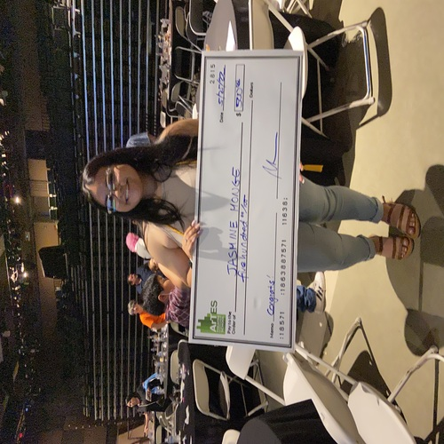
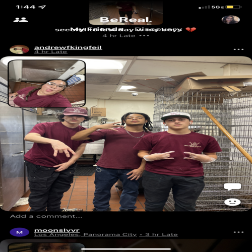
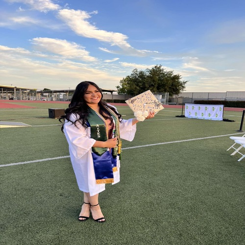
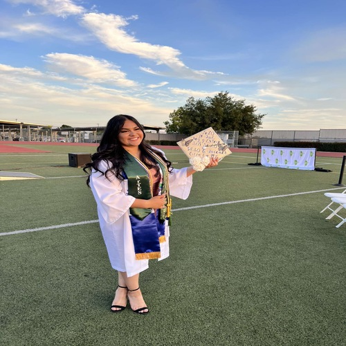

Jasmine Monge
Hello my name is Jasmine Monge and I currently attend the University of California, Riverside. I am currently enrolled as a pre business student in hope to apply to the UCR School of business by the end of my 2nd year. I want to continue my education and concentrate on business administration, marketing or finances. I got interested in business because I loved the aspect of being the boss of others. I believe I have great leadership skills and am very self motivated to be able to create a business of my own and bring it to success. Although I am only a first year in college and learning the ins and outs of business, I am fascinated with the way I see businesses now. All the things that go behind the scenes that not many are educated on. I hope to be able to bring my ideas to life and create a brand or company that benefits many.
So far I haven’t had much experience in this field. I have owned my own business or interned at said business to try and shadow but I have worked with other smaller companies and promoted their brands for commission. I have worked with about 3 companies I want to say. One of them being a college apparel clothing shop online. These all women brand remote “cute and comfortable” clothing for game day to wear at your college. They are fairly new and don’t have licensing for all universities as they have just started within the last 5 years but are working to potentially have all universities for everyone to enjoy game day apparel. Other small businesses that I have worked with are jewelry and self-started clothing brands. They have all worked the same way with promoting for commission. Other than that I have not worked in other companies or for major companies. Although I do intend to intern or get a job in a company to hopefully further my education and get first hand experience with the different companies. As well as the environment and how everything works and is equipped. I have many opportunities here at UCR to either intern or learn more about them. I have many counselors and mentors and teachers who have connections and have plenty of information about internships. They even encourage us to apply to some by the end of our second year to hopefully get our name out and doing things that will catch the employers attention. Even if we don’t want an internship at the time we apply, my mentors have mentioned that getting our name out helps so by the time we do consider an internship, we have a higher chance at receiving one.
I also do have experience in the job world outside of business, I have worked in 2 jobs before coming to college. I have been a tutor as well as worked in retail. The tutoring was only a month during the summer and my retail job lasted all of my senior year from October 2021 until the end of summer in September 2022. Both jobs helped me learn to be patient and learn how different environments work. As well as get experience with customers and services.
Experience
Retail
• Served Customers
• Restocked the store
• Prepare for opening and closing of the store
Tutor
• Guided students with various subjects
• Learned new teaching tactics
VP of Senior Commitee
• Held meetings about senior projects
• Planned events for seniors
• Budgted with senior class
• Held funraisers
Education
UC Riverside
Portfolio





